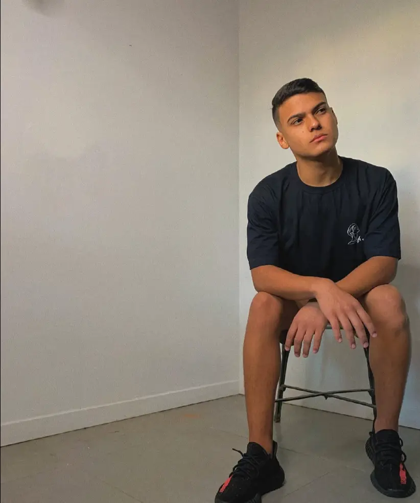

Eduardo Lamin | WDD 130

Hi! My name is Eduardo Lamin and I'm from Curitiba.
I like soccer and Music. My favorites instruments are the Piano and the Guitar.
I am currently studying Software Development at BYU-Pathway Worldwide.
I have one brother and two sisters and hope to be a great developer.